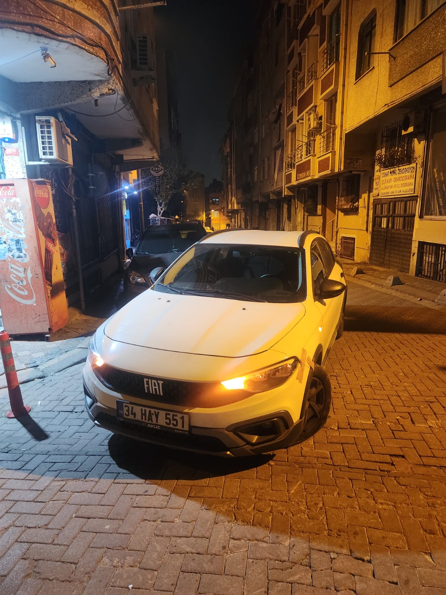
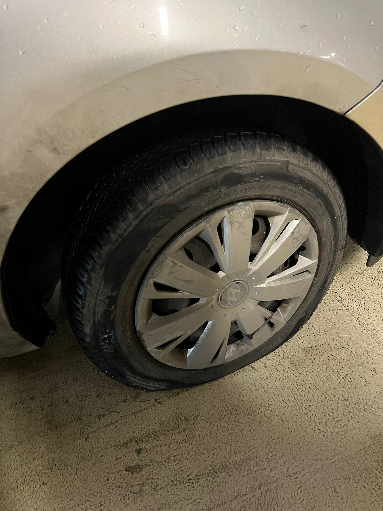
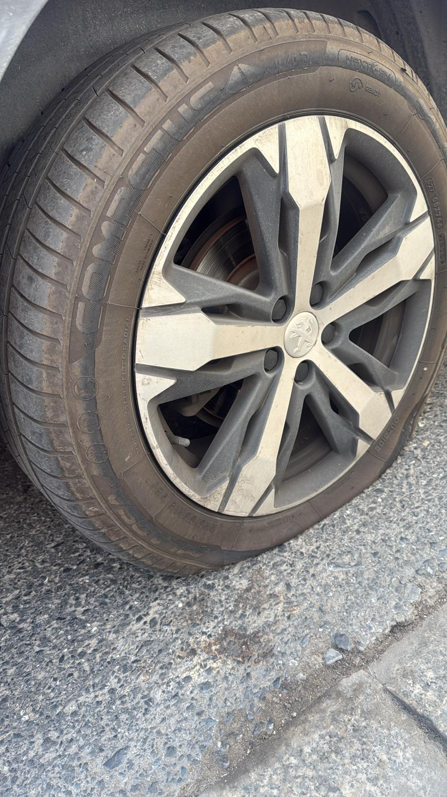
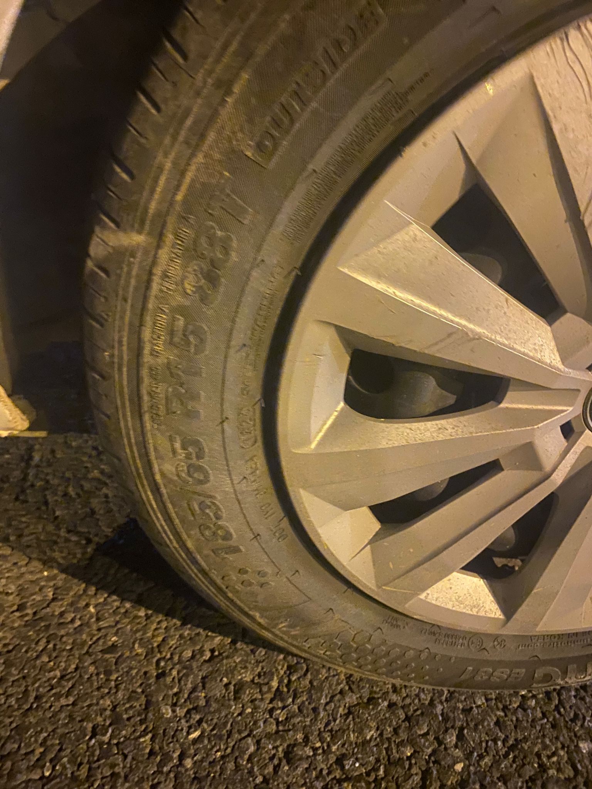

Size en yakın servis aracını yönlendirebilmemiz için lütfen konum izni veriniz.
Patlak lastik, yolda kalma, acil lastik değişimi. Tek tıkla arayın, en yakın mobil ekip 15–30 dakika içinde gelsin.




Konumunuza gelen tam donanımlı profesyonel ekip.
Yolda kalan araçlara acil müdahale.
Gece gündüz fark etmez 7/24 servis.
Yerinde hızlı, güvenli ve ekonomik çözüm.